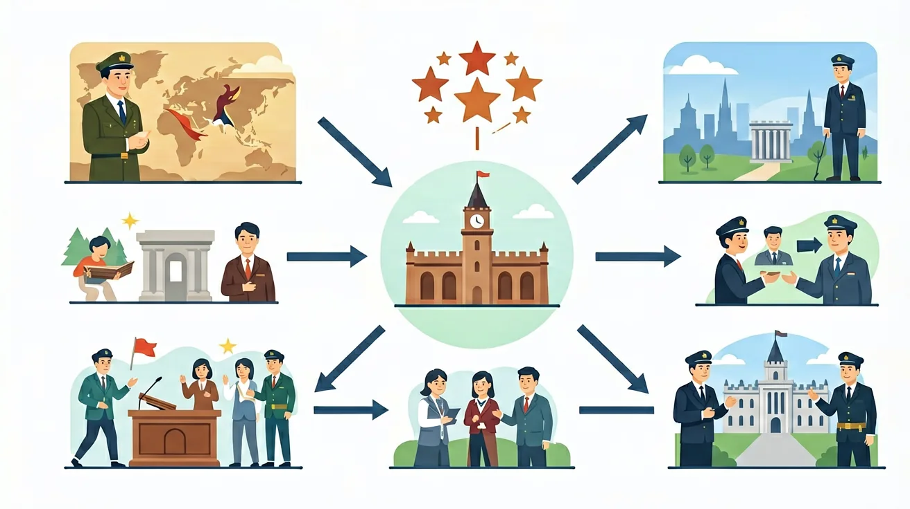

1. 你知道什么是资产阶级吗？他们在封建社会中处于什么地位？2. 你能列举出至少两个资产阶级革命的例子吗？3. 你认为资产阶级革命为什么会爆发？
1. 英国资产阶级革命和法国大革命有哪些主要区别？2. 资本主义制度的核心特征是什么？3. 资产阶级革命对世界历史产生了哪些影响？
错因：学生容易将资产阶级革命简单地理解为‘富人反对国王’，忽略了其复杂的社会经济背景。误区：认为革命后所有人都获得了平等权利。诊断：实际上，革命主要保障了资产阶级的利益，劳动群众的权益往往被忽视。
迁移挑战：设计一个表格，对比英国、法国和美国资产阶级革命在原因、过程和结果上的异同，并分析这些差异对三国后续发展的影响。
先独立作答，再点选项查看对错与错因。
1640年英国议会重新召开的主要原因是？
英国资产阶级革命中，议会与国王的主要矛盾是？
英国资产阶级革命的实质是？
英国资产阶级革命中，议会代表的主要阶级是____和____。
答案：资产阶级,新贵族
议会代表的主要阶级是资产阶级和新贵族，他们要求限制王权。
1640年英国议会重新召开后，议会与国王的矛盾最终导致____爆发。
答案：内战
议会与国王的矛盾激化，最终导致内战爆发。
下列哪一项最能体现英国资产阶级革命的实质？
分析议会与国王的主张，理解英国资产阶级革命的实质。
错误一：将"光荣革命"等同于英国资产阶级革命全过程。学生常因教材重点叙述1688年事件而忽略1640-1660年的内战阶段。认知根源在于革命时间跨度大（近50年），且克伦威尔护国政体与斯图亚特王朝复辟形成叙事断裂。实际上，革命始于1640年长期议会召开，1642年爆发两次内战，1649年处决查理一世建立共和国，最终通过1688年政变确立君主立宪制。
错误二：认为《独立宣言》签署即美国独立战争胜利。学生容易混淆1776年宣言发表与1783年《巴黎和约》的时间差（7年战争）。根源在于对战争阶段认知模糊。事实上，1777年萨拉托加大捷是转折点，1781年约克镇围歼英军主力，1783年才正式结束战争。期间还经历《邦联条例》（1781）到《联邦宪法》（1787）的制度探索。
错误三：将法国大革命"人权宣言"与具体革命进程脱钩。学生常孤立记忆1789年8月26日《人权和公民权宣言》，却忽略其与三级会议（1789.5）、网球场宣誓（1789.6）、攻占巴士底狱（1789.7）的因果关系。根源在于对启蒙思想制度化的过程理解不足。实际上，宣言是制宪议会阶段产物，其"私有财产神圣不可侵犯"（第17条）直接体现资产阶级革命诉求，与后续1791年宪法确立的君主立宪制形成制度链条。
实例一：美国联邦法院系统对"三权分立"原则的实践。2023年拜登学生贷款减免案中，最高法院以6:3裁定总统行政权越界，直接援引1787年宪法第1条第8款"钱袋权"归属国会的条款。这体现了制宪会议对英国"无代表不纳税"教训的制度化改造。
实例二：法国市政广场命名中的革命记忆。巴黎的"共和广场"（Place de la République）与"民族广场"（Place de la Nation）形成于1880年代第三共和国时期，其空间布局延续了1792年"祖国祭坛"的共和符号体系，广场中央的玛丽安雕像手持《人权宣言》铭牌，成为当代公民游行的固定集合点。
实例三：英国议会质询制度的数字化转型。下议院2021年推出的"立法追踪系统"实时公开法案修订记录，其底层逻辑源自1641年《三年法案》确立的议会定期召开原则。系统特别标注财政法案的辩论优先级，这直接继承自1689年《权利法案》第4条"未经议会同意不得征税"的历史约束。
问题一：为何英国资产阶级革命后仍保留君主制，而法国大革命最终走向共和？分析线索：比较1688年英国"土地贵族资产阶级化"与1789年法国"第三等级内部裂变"的社会结构差异；注意英国革命前"议会传统"（自1215年《大宪章》）与法国"绝对君主制"（路易十四时期）的政体基础区别；思考克伦威尔共和实验（1649-1660）对英国政治文化的反向影响。
问题二：美国独立战争是否属于严格意义的资产阶级革命？分析线索：考察北美殖民地1763-1776年经济数据（烟草出口量增长300%但利润被英国截留60%）；对比杰斐逊《独立宣言》原稿中删除的"奴隶贸易"谴责段落与1787年宪法"五分之三妥协"；思考汉密尔顿《制造业报告》（1791）与英国"光荣革命"后金融革命的制度传承关系。
先看17世纪英国如何打破"君权神授"魔咒：查理一世1629-1640年"个人统治"期间强行征收船税，引发1637年汉普顿拒税案；当1640年长期议会召开时，资产阶级与新贵族联盟已控制下议院60%席位。接着观察军事独裁如何过渡到宪政：克伦威尔1653年解散残余议会时，其颁布的《政府约法》仍保留财产资格限制（200英镑年收入选举权），这为1660年斯图亚特王朝复辟埋下伏笔。最后聚焦制度定型：1689年《宽容法案》允许非国教徒经商，配合1694年英格兰银行成立，完成政治革命与经济革命的咬合。
法国大革命的爆发点1788年财政报告显示：王室债务占GDP的56%，但特权等级仅承担2%税负。制宪议会1789年8月4日夜废除封建制度时，实际保留了土地赎买金（直到1793年才取消），这种妥协反映资产阶级与农民联盟的脆弱性。当1791年6月路易十六出逃瓦伦事件发生后，立法议会中吉伦特派与雅各宾派关于"战争扩大革命还是毁灭革命"的辩论，本质上是对英国1688年"不流血革命"模式的再反思。
北美独立战争的独特性在于：1776年亚当斯《关于政府的思考》明确提出"代议制应像人民亲自集会那样行动"，这超越了洛克"财产权"理论；而1787年费城制宪会议设计的"复合共和制"（联邦党人文集第39篇），通过参议院各州平等代表权，既避免了法国1795年督政府的软弱，又克服了英国上议院的贵族残余。当1800年总统权力和平移交时，汉密尔顿的金融体系已吸引2500万美元欧洲资本投入运河建设，证明制度创新与资本积累的良性循环。
❓ 为什么英国革命要砍国王的头，而美国革命却不用？
❓ 课本说'资本主义制度确立'，到底确立了哪些具体规则？
❓ 法国大革命那么乱，最后怎么还能成功？
学完这一课，这些问题你都能自信地回答。
🎯 能说出英法美三国资产阶级革命的根本原因差异
🎯 能判断《权利法案》《独立宣言》《人权宣言》的核心原则
🎯 能分析资本主义制度对封建制度的三大进步性
✅ 君主立宪本质是资产阶级代议制
💡 被保留君主的形式迷惑
✅ 实际保障资产阶级财产权为核心
💡 混淆口号与现实
口诀：英国慢慢改，法国砍得快，美国新大陆，制度更现代
类比：像升级操作系统：封建制是XP，资本主义是Win10，革命就是重装过程
英国《权利法案》主要限制：
美国1787年宪法保留奴隶制说明：
（真题）法国1791年宪法规定'积极公民'需纳税，反映：
（迁移）当代西方议会辩论常被媒体打断，最接近：
（概念）资本主义制度最本质特征是：
